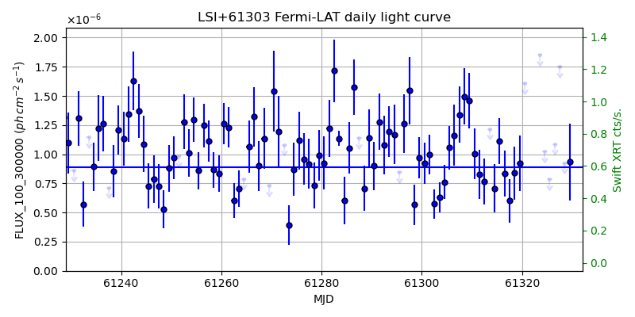
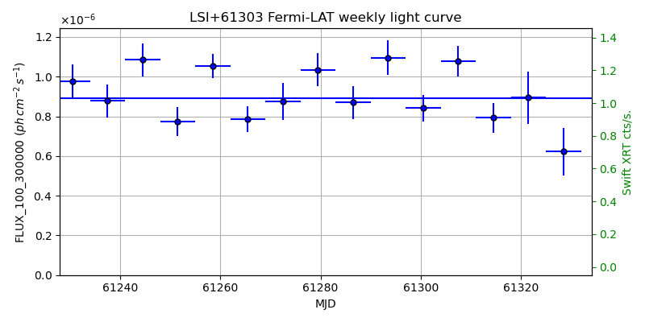
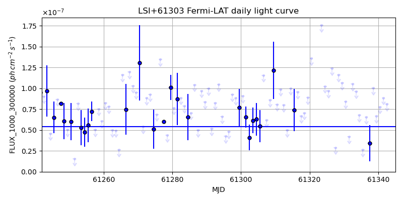
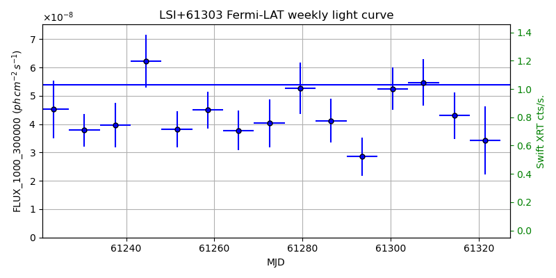

LAT Lightcurve site: https://fermi.gsfc.nasa.gov/ssc/data/access/lat/msl_lc/source/LSI_p61_303
Swift site: https://www.swift.psu.edu/monitoring/source.php?source=LSI+61303
NED: Query
Time of last update of this page: UT: 2026-10-24 15:13 (MJD: 61337.634)
| Property | Value |
|---|---|
| R.A. | 2:40:31.44 |
| Dec. | 61:13:44.4 |
| z | 0.000 |
| 3FGL SpectrumType | LogParabola |
| 3FGL PL Index | |
| 3FGL Flux_100_300000 | 8.90e-07 1 / (s cm2) |
| 3FGL Flux_1000_300000 | 5.39e-08 1 / (s cm2) |
| 3FGL Flux >200 GeV | 7.50e-12 1 / (s cm2) |
| 3FGL Extrap. Crab >200 GeV | 0.03 |
| 3FGL Flux After EBL Absorption >200GeV | 7.50e-12 1 / (s cm2) |
| 3FGL EBL Crab Fraction >200GeV | 0.03 |

| MJD | dMJD | Flux | dFlux | Frac3FGL | FracCrab>200GeV | EBLFracCrab>200GeV |
|---|---|---|---|---|---|---|
| 61332.50 | 0.50 | 9.26e-07 | 0.00e+00 | 0.00 | 0.00 | 0.00 |
| 61333.50 | 0.50 | 1.22e-06 | 2.41e-07 | 1.37 | 0.04 | 0.04 |
| 61334.50 | 0.50 | 1.35e-06 | 2.37e-07 | 1.51 | 0.05 | 0.05 |
| 61335.50 | 0.50 | 1.11e-06 | 2.32e-07 | 1.25 | 0.04 | 0.04 |
| 61336.50 | 0.50 | 1.13e-06 | 2.42e-07 | 1.27 | 0.04 | 0.04 |

| MJD | dMJD | Flux | dFlux | Frac3FGL | FracCrab>200GeV | EBLFracCrab>200GeV |
|---|---|---|---|---|---|---|
| 61300.50 | 3.50 | 8.41e-07 | 6.72e-08 | 0.94 | 0.03 | 0.03 |
| 61307.50 | 3.50 | 1.08e-06 | 7.69e-08 | 1.21 | 0.04 | 0.04 |
| 61314.50 | 3.50 | 7.93e-07 | 7.54e-08 | 0.89 | 0.03 | 0.03 |
| 61321.50 | 3.50 | 8.95e-07 | 1.32e-07 | 1.01 | 0.03 | 0.03 |
| 61328.50 | 3.50 | 6.22e-07 | 1.20e-07 | 0.70 | 0.02 | 0.02 |

| MJD | dMJD | Flux | dFlux | Frac3FGL | FracCrab>200GeV | EBLFracCrab>200GeV |
|---|---|---|---|---|---|---|
| 61332.50 | 0.50 | 1.05e-07 | 0.00e+00 | 0.00 | 0.00 | 0.00 |
| 61333.50 | 0.50 | 9.63e-08 | 0.00e+00 | 0.00 | 0.00 | 0.00 |
| 61334.50 | 0.50 | 6.79e-08 | 0.00e+00 | 0.00 | 0.00 | 0.00 |
| 61335.50 | 0.50 | 2.62e-08 | 0.00e+00 | 0.00 | 0.00 | 0.00 |
| 61336.50 | 0.50 | 6.56e-08 | 0.00e+00 | 0.00 | 0.00 | 0.00 |

| MJD | dMJD | Flux | dFlux | Frac3FGL | FracCrab>200GeV | EBLFracCrab>200GeV |
|---|---|---|---|---|---|---|
| 61300.50 | 3.50 | 5.25e-08 | 7.53e-09 | 0.97 | 0.03 | 0.03 |
| 61307.50 | 3.50 | 5.47e-08 | 8.28e-09 | 1.01 | 0.03 | 0.03 |
| 61314.50 | 3.50 | 4.31e-08 | 8.23e-09 | 0.80 | 0.03 | 0.03 |
| 61321.50 | 3.50 | 3.43e-08 | 1.19e-08 | 0.64 | 0.02 | 0.02 |
| 61328.50 | 3.50 | 4.03e-08 | 0.00e+00 | 0.00 | 0.00 | 0.00 |
--------------------------------------------------------- Using user-supplied coords: 2:40:31.44 61:13:44.4 2000 --------------------------------------------------------- FLWO UT night of: 2026-10-25 Local Sid. @ Midnight: 01:50 Sunset (-15.0) (local, UT): 18:49 01:49 Sunrise (-15.0) (local, UT): 05:27 12:27 Moonrise (local, UT): Moonset (local, UT): Moon phase: 0.99 --------------------------------------------------------- AzTime LSID UT Obj_el Obj_az Mn_el Mn_az Sep. --------------------------------------------------------- 18:49 20:39 01:49 27.1 32.6 26.2 94.5 54.8 19:19 21:09 02:19 30.6 33.6 32.4 98.6 54.6 19:49 21:39 02:49 34.1 34.2 38.6 103.2 54.4 20:19 22:09 03:19 37.7 34.3 44.7 108.4 54.3 20:49 22:39 03:49 41.3 33.9 50.6 114.6 54.1 21:19 23:09 04:19 44.9 32.8 56.2 122.3 53.9 21:49 23:39 04:49 48.2 31.0 61.2 132.2 53.7 22:19 00:09 05:19 51.4 28.4 65.5 145.3 53.5 22:49 00:39 05:49 54.3 24.8 68.4 162.2 53.4 23:19 01:10 06:19 56.7 20.1 69.4 182.2 53.2 23:49 01:40 06:49 58.6 14.4 68.2 202.0 53.1 00:19 02:10 07:19 59.9 7.7 65.1 218.6 52.9 00:49 02:40 07:49 60.3 0.6 60.8 231.3 52.7 01:19 03:10 08:19 60.0 353.4 55.7 240.9 52.6 01:49 03:40 08:49 58.9 346.6 50.1 248.5 52.4 02:19 04:10 09:19 57.1 340.7 44.3 254.6 52.3 02:49 04:40 09:49 54.7 335.9 38.2 259.8 52.1 03:19 05:10 10:19 51.9 332.1 32.1 264.4 52.0 03:49 05:40 10:49 48.8 329.3 26.0 268.5 51.8 04:19 06:10 11:19 45.4 327.4 19.9 272.4 51.7 04:49 06:40 11:49 41.9 326.3 13.8 276.2 51.5 05:19 07:11 12:19 38.3 325.8 7.8 279.9 51.4 05:27 07:18 12:27 37.4 325.7 6.2 280.9 51.3 --------------------------------------------------------- Moon up all night, no dark time. Dark hours >55 deg.: 0.00